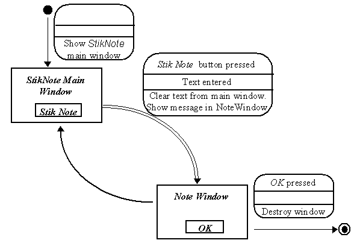

The StikNote application - STD

The double arrow leading from the Main Window state to
the StikNote Note
state indicates that multiple instances of this state can occur
simultaneously. The exit transition from this state effect only a single
instance not all instances.